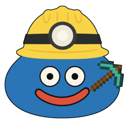

GSM Wrapped今年の読書、ふりかえろう
Your Year in
GameSentenceMiner
Characters read, top titles, kanji, cards mined, and your reading personality. Made from your own gsm.db.
Drop your gsm.db here
or choose the file. Big databases are fine. Not sure where it is? Follow the steps below.
Your database never leaves your device. Everything is read and calculated in this browser tab; nothing is uploaded.
Find your gsm.db in 4 steps
-
1
Find GSM in your system tray
Look in the bottom-right corner of the taskbar, next to the clock. It’s the slime in a hard hat. Can’t see it? Click the little ^ arrow to show hidden icons.
-
2
Right-click it and choose
Open GSM Folder
A File Explorer window opens on the folder where GSM keeps your data.
-
3
Find
gsm.dbIt’s usually near the bottom. If Windows hides file extensions it may just say gsm with the type Data Base File. GSM still open? Ctrl-click
gsm.db-walas well so today’s reading is included. -
4
Drag it onto this page
Drop it anywhere on this page and your year starts playing. It’s read right here in your browser and never uploaded. You can even drop the whole folder.
- 1
Click GSM in the menu bar
Top-right of your screen, near the clock. It’s the slime in a hard hat.
- 2
Choose
Open GSM Folder
A Finder window opens on your GSM data folder.
- 3
Find
gsm.dbUsually
~/.config/GameSentenceMiner/gsm.db. GSM still open? ⌘-clickgsm.db-waltoo. - 4
Drag it onto this page
Drop it anywhere here. Nothing is uploaded.
- 1
Find GSM in your system tray
Where the tray lives depends on your desktop (KDE, GNOME with AppIndicator, etc.).
- 2
Right-click →
Open GSM Folder
Your file manager opens on the GSM data folder.
- 3
Find
gsm.dbUsually
~/.config/GameSentenceMiner/gsm.db. GSM still open? Ctrl-clickgsm.db-waltoo. - 4
Drag it onto this page
Drop it anywhere here. Nothing is uploaded.
Can’t find the GSM icon?
- In GSM’s main window, use the File menu → Open GSM Folder.
- Windows: paste
%APPDATA%\GameSentenceMinerinto the File Explorer address bar and press Enter. - macOS / Linux:
~/.config/GameSentenceMiner/gsm.db. On macOS press ⌘⇧G in Finder to type the path. - Moved your data folder? GSM shows the exact database path under Settings → Data Folder.